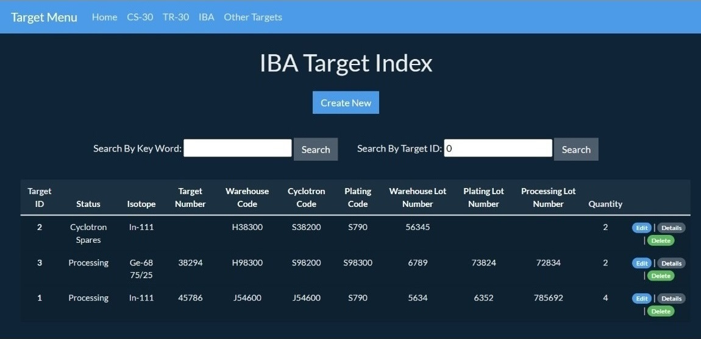

Views
Index
The image on the left shows how it looks like a target Index, the values are for trial purposes. Every target-type table has its own index. Every index looks the same, both have two searching box tools that will let employees save time. As well all the columns have the ability to sort the information in ascending or descending order by only clicking on the title of each column. Not all the information is exposed on the index, only codes, lot numbers, the id of the target, and the status.